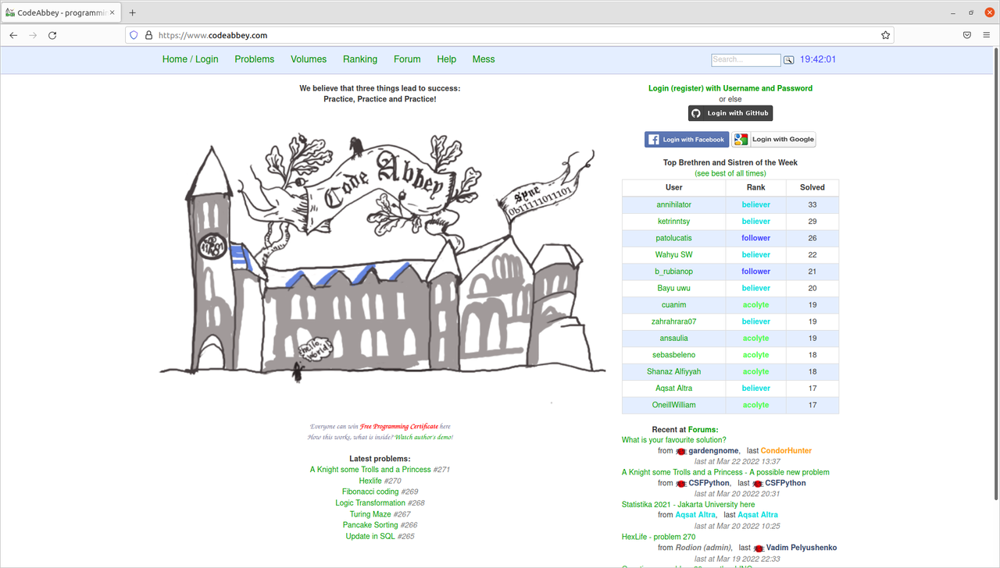
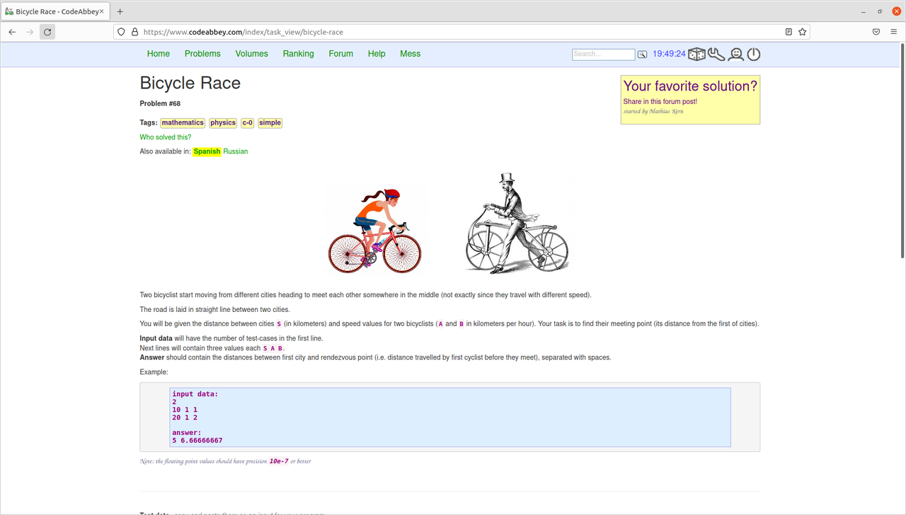
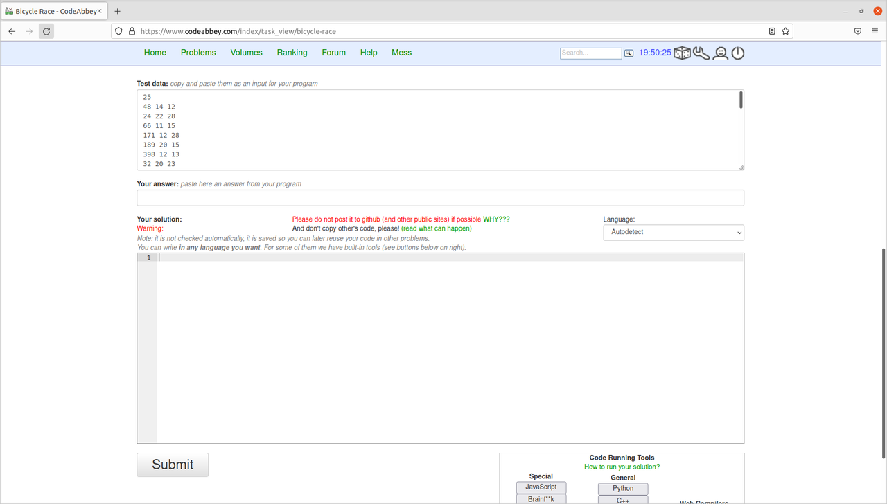

Code Abbey una plataforma para mejorar tu habilidad en programación

Alguna vez te has pregundado, ¿Cómo puedo mejorar mis habilidades de programación?. Este artículo tiene la respuesta, te mostraremos una de las mejores plataformas para que puedas practicar programación resolviendo problemas.
¿Qué es Code Abbey ?
Creemos que hay tres cosas que nos guían al éxito: Practica, Practica y ¡Practica!
Code Abbey es una plataforma, impulsada y mantenida por Rodion Gorkovenko con ayuda de la comunidad de Code Abbey, contiene gran cantidad de problemas con dificultad variable, desde una simples sumas, hasta algunas donde tienes que aplicar conceptos de Inteligencia Artificial. Puedes resolver los problemas en varios lenguajes: C, C++, C#, Python, Java, JavaScript e incluso con algunos menos conocidos como: Turing y Brainf**k.
¿Cómo funciona?
Puedes registrarte con una cuenta de gmail, facebook o de GitHub.

Un vez hecho el Login puedes ver los problemas haciendo click en la pestaña Problems. Seleccionado el problema se te abrira la siguiente ventana:

La primera sección podrás ver el enunciado del problema y un ejemplo de entrada y salida de lo solicitado. Cuando tengas la resolución del problema (script o código), lo haces correr con los datos de entrada del test (Test Data).

La solución que arroje tu programa la copias en el espacio vacio de de You Answer. Luego le puedes dar click a Submit, una vez se haya comprobado que la respuesta es correcta, la resolución del problema será dada como válida.
Otra forma de verificar que tu código arroja la respuesta correcta es pegar el código a la plataforma en el espacio vacio que encuentra por encima del boton Submit, y hacerla correr con los botones que se encuentran en la parte inferior derecha, haciendo click en el botón de tu lenguaje de programación hará correr el script con los datos de test data y escribira la solución en la parte de Your Answer y guardará tu código en la plataforma. Es recomendable guardar el código en la plataforma incluso si no haces correr y sólo subes la respuesta manualmente, esto permite la compobracion para lo administradores de Code Abbey de que estas resolviendo los problemas por tu cuenta.
Una vez tu solución haya sido validada se te añadiran puntos de Enlightment (que están calculados en base a la cantidad de personas que resolvieron el mismo problema) y con base a los problemas resueltos se te asignará un rango dentro de la comunidad.
Zealus Coder rank Cuando resuelvas 120 problemas de los marcados con negrita o con la etiqueta c-1, puedes reclamar el certificado de CodeAbbey Zealous Coder, que certificará que resolviste los problemas difíciles de la plataforma. Como forma de motivar a que más mujeres entren al mundo de la programación, Code Abbey da un diploma honorario a las chicas que resuelvan 85 problemas y el rango de Fanatic Girl-Coder.
¿Por qué resolver problemas en Code Abbey?
Muy aparte de la satifacción de resolver problemas, ascender rangos, pertenecer a una comunidad y/o obtener un certificado que puedas presumir en tus redes. Se tiene que tener en cuenta que la resolución de estos problemas, ayudan a afinar tus habilidades en programación, porque para la resolución de los problemas se requieren conocimientos de conceptos básicos, estadística, estructura de datos, algoritmos de busqueda, ordenación, criptografía, teoría de números, entre otros. Estos problemas, pueden ayudarte a prepararte para entrevistas y/o para mejorar tu propio código, viendo cómo lo han resuelto los demás (esta opción se habilita cuando tu solución sea tomada como válida).
¿Qué hacer cuando un problema es muy complicado?
Puedes ir a la sección de Volumes de la plataforma y darle una leida, y si no basta puedes darle un vistazo a los siguientes recursos:
- CS50X: Curso gratuito, ideal para los que empiezan a programar.
- Python Crash Course - Eric Matthes: Libro para iniciantes en python.
- Learn X in Y. Recurso web para aprender cualquier lenguaje de programación.
- Grokking algorithms- Aditya Bhargava: Libro para preparte en problemas complicados.
- Craking the Coding interview - Gayle Laskmann: Libro para preparte en problemas complicados.
Libros para mejorar tus matemáticas * Mathematics for Computer Science - Eric Lehman and Tom Leighton * Introduction to algorithms - Thomas H. Cormen * Algorithm Design - Jon Kleinberg
¿Sitios similares?
- ROSALIND Orientado a problemas de programación en Bioinformática.
- Project Euler Contiene poblemas matemáticos y de programación.
- algo.is Problemas de competición de programación.
- exercism Contiene problemas variados de programación.
Comentarios
Comments powered by Disqus